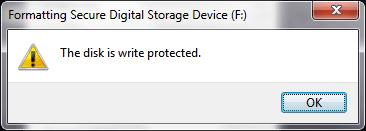
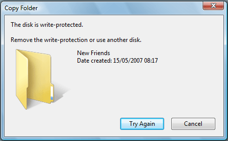
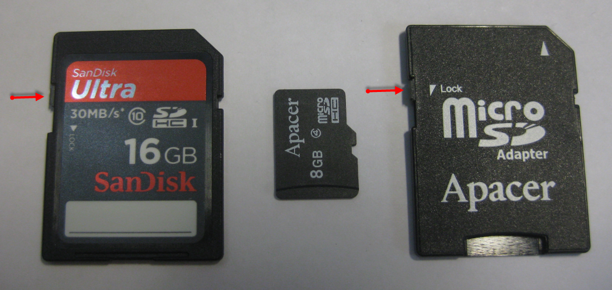
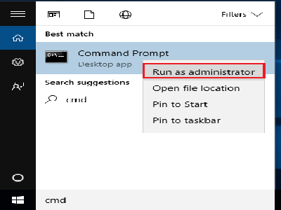
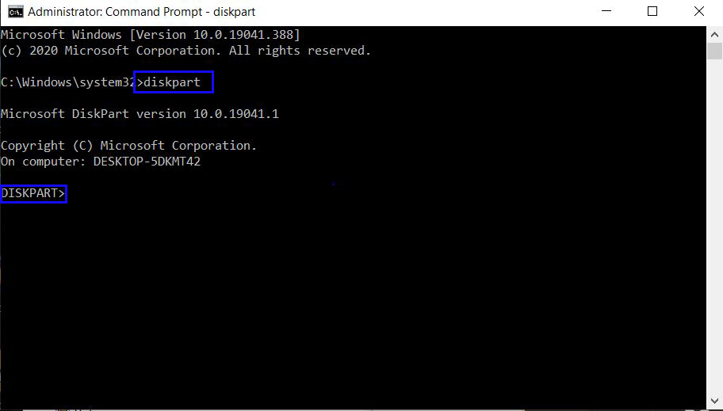
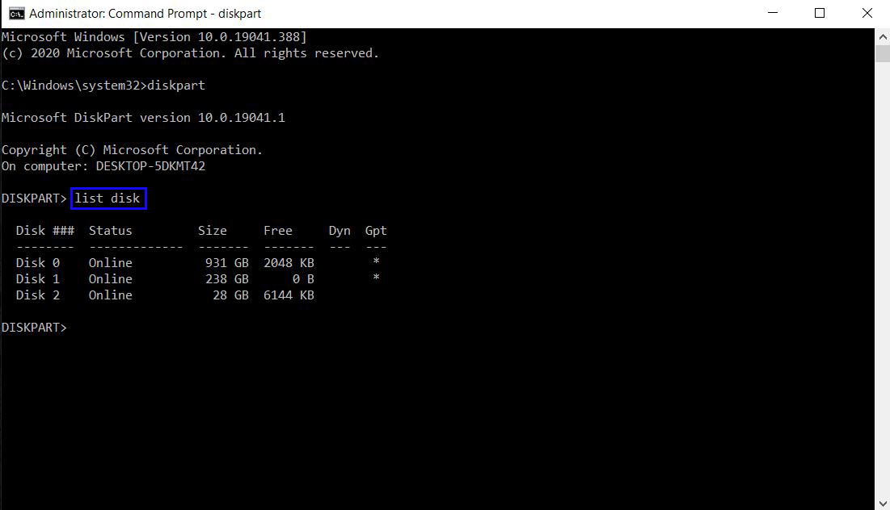
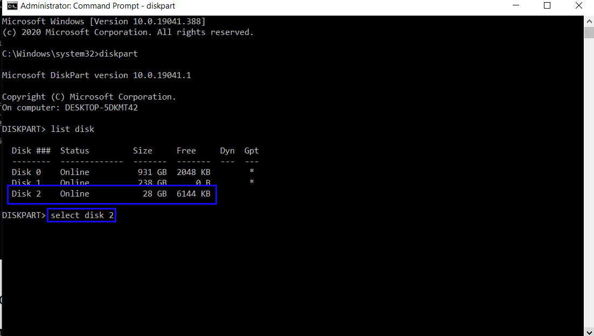
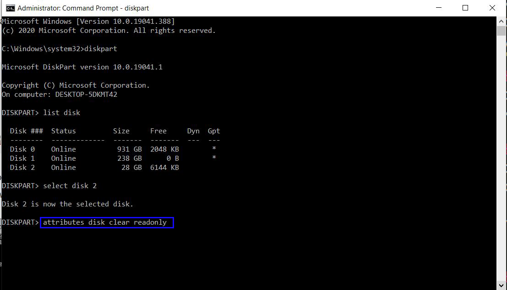
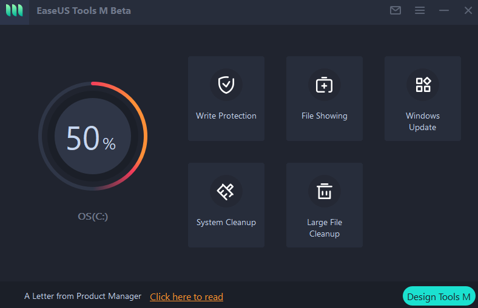

How To Remove Write Protection And Fix Other Problems:
What is write Protection:-
Write protection is defined as the ability of a hardware device or software program to prevent new information being written, meanwhile old information being modified or changed. In simple words, when a disk is write-protected, you cannot use it normally to write data or copy data on it.
Pen drive is write protected while formatting:

Pen drive is write protected while copying files

How to Remove Write Protection from Pen Drive:-
Method 1. Check Lock Switch and Disable Write Protection

Method 2. Removing Write Protection using CMD
Step 1:Open CMD as Administrator

Step 2:Type diskpart in CMD

Step 3:Type list disk in CMD

Step 4:Selet your Disk type select disk # in CMD
Note:Remove # With Your Drive letter.

Step 5:Type attributes disk clear readonly in CMD

Method 3. Removing Write Protection using Software
EaseUS Tools M is a practical computer fixing tool that is safe and light-weighted. It's a perfect alternative to the command line.
Use this one-click tool to solve the write-protection issues on your own:
Step 1:
Download and install EaseUS Tools M for free.

Step 2: Select the device which is now "Write-Protected" and click "Disable" to remove the protection.

How To Remove Bad Sectors from Drive
Step 1: Open CMD As administrator
Step 2: Type chkdsk /r #: Remove # with your pendrive drive letter

Watch Full Tutorial Video On.